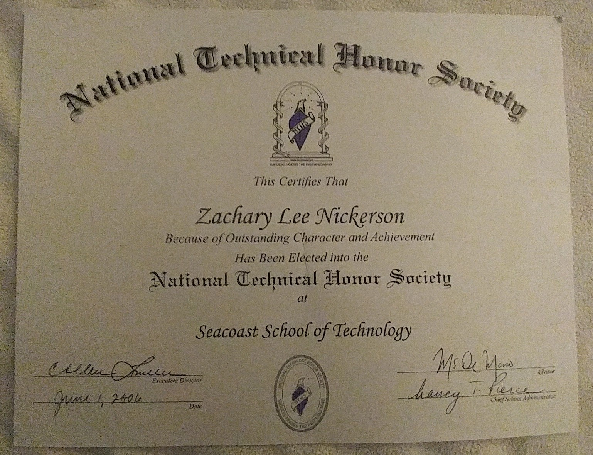

National Technical Honor Society
What an honor! I received this award in 2006 fom the Seacoast School of Technology where I spent my last two years of high school learning the fundamentals of programming which set the stage for the more advanced college courses I would take soon after. I learned an incredible amount in these two years and the knowledge and skills I aquired here without a doubt increased my confidence that this was the field I wanted to pursue. Receiving this award meant a lot to me because it shows what hard work and perseverance can accomplish.
Over the course of these two years, obstacles and challenges were of course encountered, but dedicating the time and effort into overcomming and solving them was extremely rewarding and worthwhile. If someone asked me if I would do it all over again I would answer absolutely without hesitation. Not only was it a great learning experiance but the fun atmosphere and extremely helpful and friendly staff made it even better.